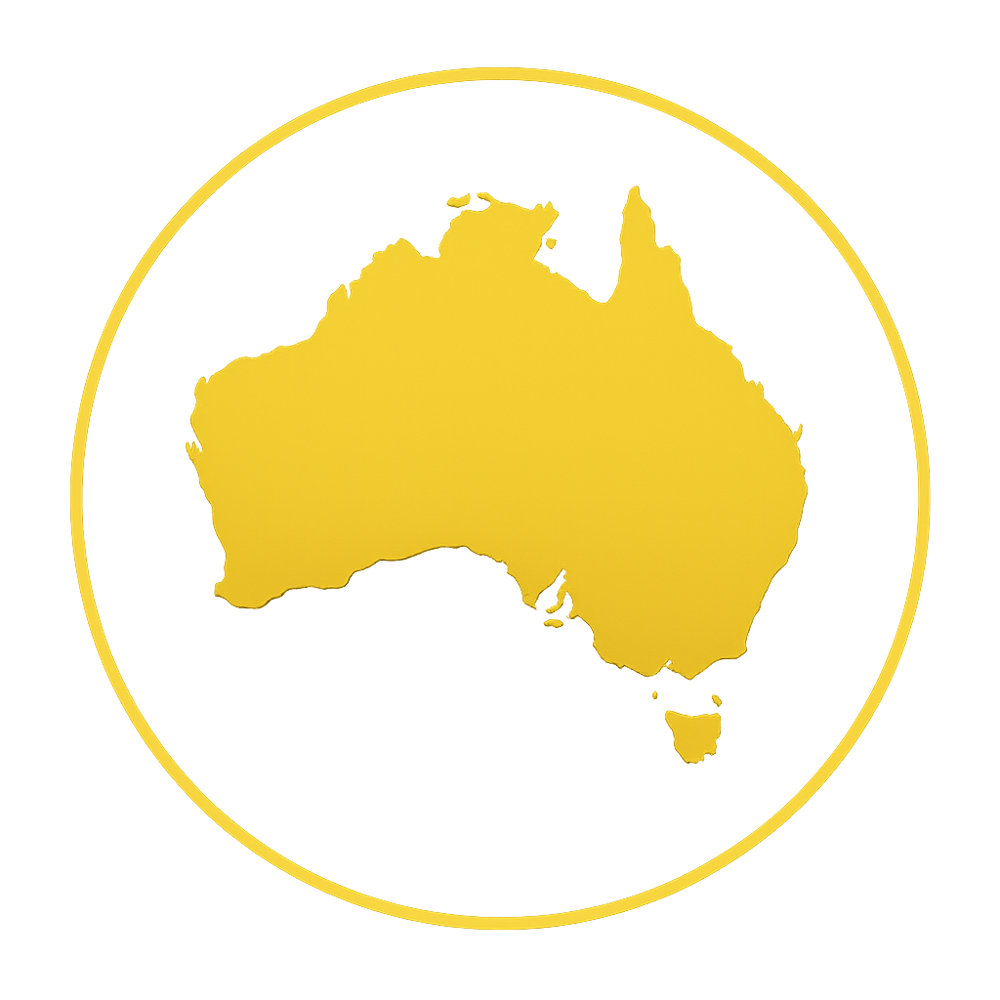
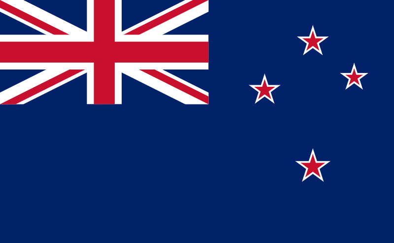

1
Seleção
2
Participações

0
Títulos

Explore o histórico das seleções da Oceania na Copa do Mundo.
Seleção
Participações
Títulos

Grupo G
A Oceania é o continente com menor representatividade na Copa do Mundo da FIFA. A Nova Zelândia é a seleção mais tradicional da região, tendo participado do torneio em 1982 e 2010. A Austrália, que também representou a Oceania por muitos anos, migrou para a confederação asiática (AFC) em 2006. O futebol na Oceania vem crescendo, mas ainda enfrenta desafios para se firmar no cenário mundial. A Copa do Mundo 2026 pode representar uma nova oportunidade para a Nova Zelândia retornar ao grande palco do futebol internacional.